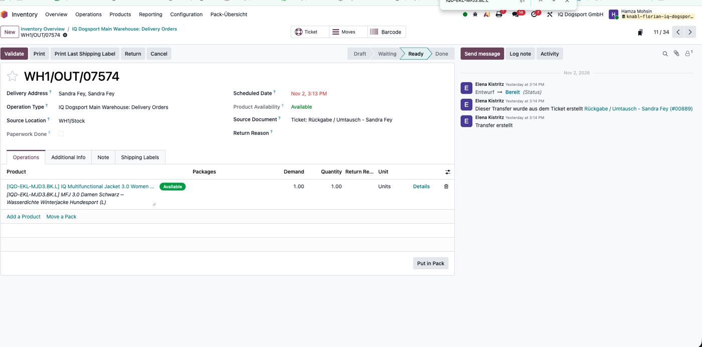
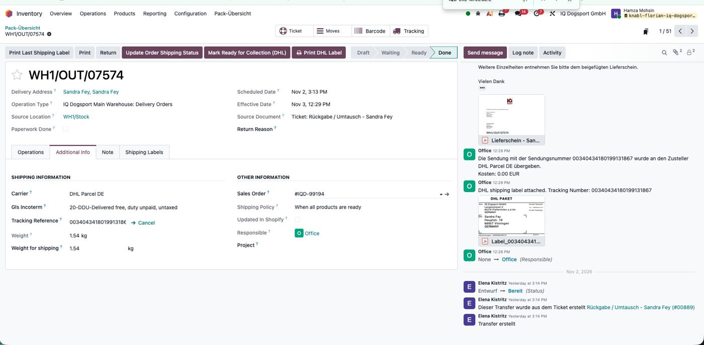
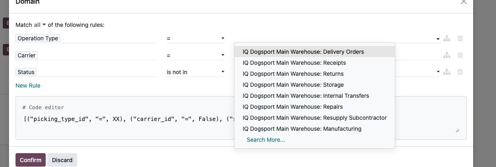
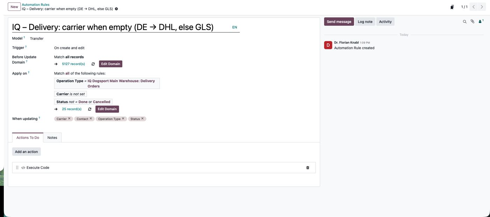
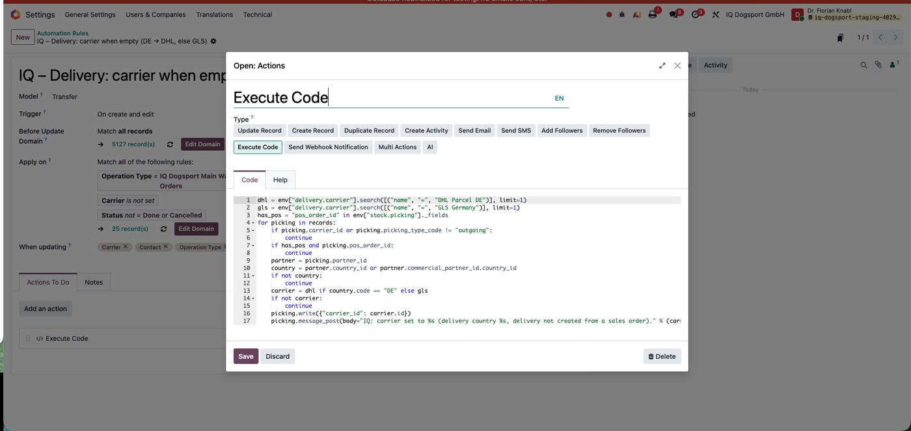
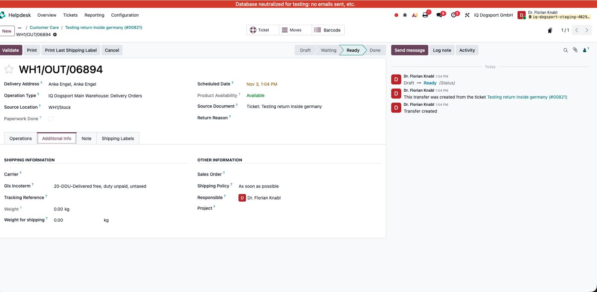

1. Problem
Exchange deliveries created from a Helpdesk ticket (button Replace / Umtausch) have no carrier. Without a carrier no DHL/GLS label is created, and "Block Validate without Carrier" stops validation.
Example Production: WH1/OUT/07574 (Sandra Fey, ticket #00889, order #IQD-99194) – carrier empty, set to DHL Parcel DE by hand on 03.11., label created afterwards. Staging: WH1/OUT/06894 (ticket #00821) – same.




2. Cause
Why it worked before 27.10: rule Auto Set Carrier (id 7) ran on every delivery and always wrote GLS Germany – a safety net for deliveries without an order. It was archived at the DHL go-live (correct for normal orders, see DHL go-live 27.10), which removed the fallback for ticket/manual deliveries. Do not unarchive rule 7: it would switch every delivery back to GLS.
3. Fix – new automation rule
| Field | Value |
|---|---|
| Name | IQ – Delivery: carrier when empty (DE → DHL, else GLS) |
| Model | Transfer |
| Trigger | On create and edit |
| Apply on | Operation Type = IQ Dogsport Main Warehouse: Delivery Orders · Carrier is not set · Status not Done/Cancelled |
| When updating | Carrier, Contact, Operation Type, Status |
| Action | Execute Code (below) |
# Odoo 19 - Automation Rule
# Name: IQ - Delivery: carrier when empty (DE -> DHL, else GLS)
# Model: Transfer (stock.picking)
# Trigger: On create and edit
# Apply on: Operation Type = "IQ Dogsport Main Warehouse: Delivery Orders"
# AND Carrier is not set AND Status not in Done/Cancelled
# code: [("picking_type_id", "=", <Delivery Orders id>), ("carrier_id", "=", False), ("state", "not in", ["done", "cancel"])]
# When updating: Carrier, Contact, Operation Type, Status
# Action: Execute Code (below)
#
# Fallback for deliveries that are NOT created by a sales order (Helpdesk Replace/exchange,
# manual deliveries). Never overwrites an existing carrier. Skips POS transfers.
dhl = env["delivery.carrier"].search([("name", "=", "DHL Parcel DE")], limit=1)
gls = env["delivery.carrier"].search([("name", "=", "GLS Germany")], limit=1)
has_pos = "pos_order_id" in env["stock.picking"]._fields
for picking in records:
if picking.carrier_id or picking.picking_type_code != "outgoing":
continue
if has_pos and picking.pos_order_id:
continue
partner = picking.partner_id
country = partner.country_id or partner.commercial_partner_id.country_id
if not country:
continue
carrier = dhl if country.code == "DE" else gls
if not carrier:
continue
picking.write({"carrier_id": carrier.id})
picking.message_post(body="IQ: carrier set to %s (delivery country %s, delivery not created from a sales order)." % (carrier.name, country.code))





4. Why nothing else breaks
| Risk | Protection |
|---|---|
| Overwriting a chosen carrier (Direct Sales, DHL International, manual) | Runs only when the carrier is empty |
| Normal order deliveries | Get the carrier from the order at creation → never empty → skipped |
| POS / shop sales | Only operation type “Delivery Orders”; code skips POS transfers |
| Returns, receipts | Only outgoing deliveries |
| Done / cancelled deliveries | Excluded |
| Customer without country | Skipped – set carrier by hand |
| Other rules (Incoterm EFTA/Outside EU, Block Validate, packing card, 8/45) | Unchanged; incoterm rules may run after the carrier is set (only incoterm) |
| Loop | After writing, “carrier empty” no longer matches |
5. How the trigger behaves (important for tests)
- On create the rule always runs → every new exchange from a ticket gets a carrier.
- On edit it runs only when Carrier, Contact, Operation Type or Status changes. Changing e.g. the Scheduled Date does not trigger it (first staging test on WH1/OUT/06894 showed exactly this). Scheduled Date is deliberately not added.
- Deliveries that existed before the rule (Staging: 25 open without carrier) are only filled when one of these fields changes, or with the one-off server action (section 7).

6. Tests (Staging)
| Test | Expected | Result |
|---|---|---|
| Ticket → Replace, customer in Germany (new delivery) | DHL Parcel DE + chatter “IQ: carrier set …” | open |
| Ticket → Replace, customer outside Germany | GLS Germany | open |
| Normal sales order delivery | keeps order carrier, no IQ note | open |
| WH1/OUT/06894: change Contact and back | DHL Parcel DE | open |
| WH1/OUT/06894: change Scheduled Date | no change (field not watched) | ✓ as expected |
| POS sale (if used) | no carrier, no note | open |
7. Production rollout
- Run read-only check 2 (open deliveries without carrier). Deliveries that must stay without carrier (customer pickup): set Direct Sales first.
- Create the rule exactly as in section 3 (choose “Delivery Orders” from the list – the id differs between systems).
- Optional one-off for the existing open deliveries: Server Action IQ – Fill empty carrier (one-off), Model Transfer, same code → Create Contextual Action → select the deliveries from check 2 → Action → run. Check result with check 3.
- Next exchange from a ticket: check carrier + chatter note.
- Add to the rule table of DHL go-live 27.10: “IQ – Delivery: carrier when empty – fallback for deliveries not created from a sales order”.
Rollback: untick Active on the rule. Carriers already set stay (correct values).
8. Read-only checks
-- Read only: PGOPTIONS='-c default_transaction_read_only=on' psql -P pager=off -c "<query>"
-- 1. Outgoing operation types (find the id of "Delivery Orders", WH1)
SELECT t.id, t.code, to_jsonb(t)->'name'->>'en_US' AS name, w.code AS wh FROM stock_picking_type t LEFT JOIN stock_warehouse w ON w.id=t.warehouse_id WHERE t.code='outgoing' AND t.active ORDER BY t.id;
-- 2. Open deliveries without carrier (check BEFORE activating / before the one-off fill)
SELECT sp.name, sp.origin, sp.state, c.code AS country FROM stock_picking sp JOIN stock_picking_type t ON t.id=sp.picking_type_id LEFT JOIN res_partner p ON p.id=sp.partner_id LEFT JOIN res_country c ON c.id=p.country_id WHERE t.code='outgoing' AND sp.carrier_id IS NULL AND sp.state NOT IN ('done','cancel') ORDER BY sp.id;
-- 3. Deliveries filled by the rule (chatter note)
SELECT m.date, sp.name, left(regexp_replace(m.body,'<[^>]+>','','g'),120) AS note FROM mail_message m JOIN stock_picking sp ON sp.id=m.res_id AND m.model='stock.picking' WHERE m.body LIKE '%IQ: carrier set to%' ORDER BY m.date DESC LIMIT 30;